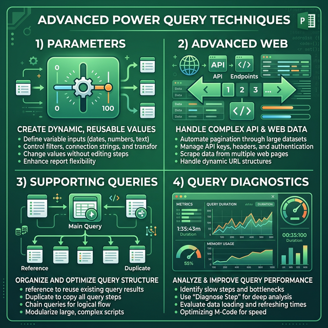

Kỹ thuật nâng cao trong Power Query
Parameters, Advanced Web Connections, Supporting Queries, Query Folding best practices và Query Diagnostics.
12.1 Parameters (Tham số)
Parameters cho phép tạo giá trị động (dynamic) để sử dụng trong queries — rất hữu ích cho việc lọc dữ liệu, thay đổi đường dẫn file, hoặc chuyển đổi giữa các môi trường.

Tạo Parameter
Mở Manage Parameters
Home → Manage Parameters → New Parameter
Cấu hình
Thiết lập: Name, Description, Required, Type (Text/Decimal/Date/True-False/List), Suggested Values, Default Value, Current Value
Ví dụ sử dụng Parameter
// Parameter: pDuongDan = "D:\Data\2024\"
// Sử dụng trong Source:
let
Source = Csv.Document(
File.Contents(pDuongDan & "SalesData.csv"),
[Delimiter=",", Encoding=65001]
)
in
Source// Parameter: pNam = 2024, pPhongBan = "IT"
= Table.SelectRows(Source,
each [Nam] = pNam and [PhongBan] = pPhongBan
)12.2 Advanced Web Connections
Web.Contents — Kết nối Web nâng cao
Hàm Web.Contents cung cấp nhiều tùy chọn hơn so với From Web cơ bản:
= Web.Contents(
"https://api.example.com/data",
[
Headers = [
#"Authorization" = "Bearer " & pToken,
#"Content-Type" = "application/json"
],
RelativePath = "v2/products",
Query = [
page = "1",
limit = "100",
category = pCategory
],
Timeout = #duration(0, 0, 30, 0)
]
)Pagination — Lấy dữ liệu nhiều trang
Nhiều API trả về dữ liệu theo trang. Dùng List.Generate để lấy tất cả:
let
BaseUrl = "https://api.example.com/products",
GetPage = (pageNum as number) =>
let
response = Json.Document(Web.Contents(BaseUrl, [
Query = [page = Text.From(pageNum), per_page = "50"]
])),
data = response[data],
hasMore = response[has_more]
in
[Data = data, HasMore = hasMore, NextPage = pageNum + 1],
// Lấy tất cả trang
AllPages = List.Generate(
() => GetPage(1),
each [HasMore] = true,
each GetPage([NextPage]),
each [Data]
),
// Gộp thành 1 bảng
Combined = Table.FromList(
List.Combine(AllPages),
Record.FieldValues
)
in
Combined12.3 Supporting Queries (Quản lý Query)
Khi workbook có nhiều queries, cần quản lý chúng hiệu quả:
Reference vs Duplicate
| Thao tác | Mô tả | Khi nào dùng |
|---|---|---|
| Reference | Tạo query mới tham chiếu đến query gốc. Thay đổi ở gốc → tự động ảnh hưởng | Khi muốn tạo nhiều output từ cùng 1 nguồn (ví dụ: lọc theo phòng ban khác nhau) |
| Duplicate | Tạo bản sao độc lập hoàn toàn. Thay đổi ở gốc → KHÔNG ảnh hưởng | Khi muốn thử nghiệm mà không ảnh hưởng query gốc |
Disable Load
Tắt "Load" cho các query trung gian (staging queries) để không tải vào Excel/Model:
- Right-click query trong Queries Panel
- Bỏ tick Enable load
- Query vẫn hoạt động nhưng không tạo bảng output
- Staging: Queries kết nối nguồn (Disable Load)
- Transform: Queries xử lý trung gian (Disable Load)
- Output: Queries kết quả cuối cùng (Enable Load)
Query Dependencies
Xem biểu đồ phụ thuộc giữa các queries:
- View → Query Dependencies
- Hiển thị sơ đồ kết nối giữa tất cả queries
- Giúp hiểu luồng dữ liệu và xác định query nào ảnh hưởng query nào
12.4 Indexing nâng cao
Ngoài Index Column cơ bản (Chương VIII), có thể tạo index phức tạp hơn:
// Index reset theo nhóm (Row Number within Group)
= Table.AddColumn(
Table.AddIndexColumn(
Table.Sort(Source, {{"PhongBan", Order.Ascending}, {"HoTen", Order.Ascending}}),
"GlobalIndex", 1, 1
),
"GroupIndex",
each Table.RowCount(
Table.SelectRows(Source,
(r) => r[PhongBan] = [PhongBan]
and r[HoTen] < [HoTen]
)
) + 1
)
// Ranking — xếp hạng theo giá trị
= Table.AddColumn(Source, "Rank",
each Table.RowCount(
Table.SelectRows(Source, (r) => r[DoanhThu] > [DoanhThu])
) + 1
)12.5 Query Folding Best Practices
Tối ưu hiệu suất bằng cách giữ Query Folding càng lâu càng tốt:
Các bước ĐƯỢC fold (thường)
- ✓ Filter Rows (Table.SelectRows)
- ✓ Remove Columns (Table.RemoveColumns)
- ✓ Sort (Table.Sort)
- ✓ Rename Columns (Table.RenameColumns)
- ✓ Group By (Table.Group)
- ✓ Merge Queries khi Join cùng database
- ✓ Top N rows (Table.FirstN)
- ✓ Change Data Type (Table.TransformColumnTypes)
Các bước KHÔNG được fold
- ❌ Custom Column (Table.AddColumn with complex M)
- ❌ Merge Columns
- ❌ Pivot / Unpivot (thường)
- ❌ Replace Values (phức tạp)
- ❌ Column from Examples
- ❌ Python / R scripts
12.6 ETL Layering Pattern: Raw → Staging → End Table
Sách "Master Your Data" đề xuất chuẩn hóa ETL thành 3 lớp:
| Lớp | Vai trò | Quy tắc |
|---|---|---|
| 📥 Raw Data | Kết nối nguồn gốc, không biến đổi | Chỉ có bước Source + Navigation. Disable Load. Một query cho mỗi nguồn. |
| 🔧 Staging | Biến đổi cơ bản: rename, type, filter | Reference từ Raw. Chuẩn hóa tên cột, kiểu dữ liệu. Disable Load. |
| 📊 End Table | Kết quả cuối cùng cho báo cáo | Reference từ Staging. Merge, Group, Custom Column. Enable Load. |
// [Raw] SalesRaw — Disable Load
let Source = Csv.Document(File.Contents("D:\Sales.csv"))
in Source
// [Staging] SalesStaging — Disable Load, Reference from SalesRaw
let
Source = SalesRaw,
Renamed = Table.RenameColumns(Source, {{"Col1","MaSP"}, {"Col2","NgayBan"}}),
Typed = Table.TransformColumnTypes(Renamed, {{"MaSP", type text}, {"NgayBan", type date}})
in Typed
// [End Table] SalesByMonth — Enable Load, Reference from SalesStaging
let
Source = SalesStaging,
Grouped = Table.Group(Source, {"NamThang"}, {{"TongDoanhThu", each List.Sum([DoanhThu])}})
in Grouped12.7 Table.Buffer & List.Buffer
Khi query chạy chậm do đánh giá lặp (lazy evaluation), dùng Buffer để cache dữ liệu trong RAM:
| Hàm | Công dụng | Khi nào dùng |
|---|---|---|
| Table.Buffer(table) | Cache toàn bộ bảng vào RAM | Khi bảng được tham chiếu nhiều lần (Merge self-join, nhiều Reference) |
| List.Buffer(list) | Cache danh sách vào RAM | Khi danh sách dùng trong List.Contains, List.Generate lặp nhiều |
// Buffer bảng trước khi self-join
let
Buffered = Table.Buffer(StagingQuery),
Merged = Table.NestedJoin(Buffered, "MaNV", Buffered, "QLNhanVien", "Manager")
in Merged
// Buffer list để tăng tốc lookup
let
ValidCodes = List.Buffer(Table.Column(LookupTable, "MaSP")),
Filtered = Table.SelectRows(Source, each List.Contains(ValidCodes, [MaSP]))
in Filtered12.8 Moving Queries giữa Excel ↔ Power BI
Queries có thể di chuyển giữa Excel và Power BI Desktop:
Excel → Power BI
- Power BI Desktop → Home → Get Data → Excel Workbook
- Chọn file .xlsx → tick chọn các queries (không phải tables)
- Queries được import cùng toàn bộ các bước Transform
Power BI → Excel (Copy M code)
- Trong Power BI → Power Query Editor → Advanced Editor → Copy code M
- Trong Excel → Power Query → New Blank Query → Advanced Editor → Paste code M
- Điều chỉnh đường dẫn file nếu cần
12.7 Power Pivot & Data Model
Power Query chuẩn bị dữ liệu, Power Pivot phân tích dữ liệu. Kết hợp cả 2 tạo nên hệ thống BI mạnh mẽ trong Excel.
Load to Data Model
Thay vì tải vào worksheet, tải query vào Data Model (bộ nhớ trong):
- Power Query → Close & Load To...
- Chọn "Only Create Connection"
- Tick ☑️ "Add this data to the Data Model"
Managing Relationships (Quản lý mối quan hệ)
Sau khi load nhiều bảng vào Data Model, tạo Relationships:
- Tab Data → Relationships → New
- Hoặc mở Power Pivot → Diagram View
- Kéo thả cột từ bảng này sang bảng kia
| Loại | Ví dụ | Lưu ý |
|---|---|---|
| One-to-Many (1:N) | SanPham(1) → DonHang(N) | Phổ biến nhất, luôn ưu tiên |
| Many-to-Many (M:N) | SanPham(N) ↔ NhaCungCap(N) | Cần bảng trung gian (bridge table) |
DAX cơ bản trong Power Pivot
DAX (Data Analysis Expressions) là ngôn ngữ công thức cho Power Pivot:
// Calculated Column: Thành tiền
= DonHang[SoLuong] * RELATED(SanPham[DonGia])
// RELATED() lấy giá trị từ bảng liên kết (1:N)
// Measure: Tổng doanh thu
TongDoanhThu := SUMX(DonHang, DonHang[SoLuong] * RELATED(SanPham[DonGia]))
// Measure với filter context
DoanhThuIT := CALCULATE(
[TongDoanhThu],
PhongBan[TenPB] = "IT"
)
// Year-to-Date
DoanhThuYTD := TOTALYTD([TongDoanhThu], Calendar[Date])PivotTable từ Data Model
Khi đã có Data Model với relationships, tạo PivotTable đa bảng:
- Insert → PivotTable → From Data Model
- Kéo fields từ nhiều bảng khác nhau vào PivotTable
- Excel tự join qua Relationships — không cần VLOOKUP!
12.8 Pitfalls & Robust Queries (Bẫy & Query bền vững)
Từ sách "Collect, Combine, and Transform Data" — những lỗi phổ biến nhất và cách phòng tránh:
Top 8 Pitfalls thường gặp
| # | Pitfall | Hậu quả | Giải pháp |
|---|---|---|---|
| 1 | Hardcode tên cột | Query lỗi khi cột đổi tên | Dùng Unpivot Other Columns, Column Index |
| 2 | Phụ thuộc thứ tự cột | Cột mới làm lệch dữ liệu | Tham chiếu bằng tên cột, không bằng index |
| 3 | Không xử lý null | Tính toán sai, lỗi ẩn | if [Col] = null then 0 else [Col] |
| 4 | Changed Type tự động | Sai kiểu dữ liệu | Xóa bước auto-detect, set type thủ công |
| 5 | Không dùng try/otherwise | 1 lỗi → cả query fail | try ... otherwise null |
| 6 | Merge không match | Null toàn bộ, không biết lý do | Kiểm tra cột key: spaces, case, type |
| 7 | Folder import hardcode path | Lỗi khi chuyển máy | Dùng Parameter cho đường dẫn |
| 8 | Quá nhiều steps | Chậm, khó debug | Gộp steps tương tự, dùng staging queries |
Tạo Query bền vững (Robust)
// Pattern 1: Safe Column Access
= Table.AddColumn(Source, "GiaTri", each
try [CotCoTh eKhongTonTai] otherwise "N/A")
// Pattern 2: Dynamic Column Check
= if Table.HasColumns(Source, "CotMoi")
then Table.SelectColumns(Source, {"CotMoi"})
else Table.AddColumn(Source, "CotMoi", each null)
// Pattern 3: Safe Type Conversion
= Table.TransformColumns(Source, {
{"Gia", each try Number.From(_) otherwise null}
})12.9 PivotChart & Slicer Dashboard
Tạo dashboard tương tác từ output Power Query — không cần VBA hay Power BI:
Tạo PivotChart từ PQ Table
- Load PQ → Table hoặc → Data Model
- Insert → PivotTable (từ Table hoặc Data Model)
- Thiết kế PivotTable: Rows, Columns, Values
- PivotTable Analyze → PivotChart → chọn Chart Type
Thêm Slicer & Timeline
| Control | Dùng cho | Cách thêm |
|---|---|---|
| Slicer | Lọc theo category (PhongBan, ChiNhanh, DanhMuc) | PivotTable Analyze → Insert Slicer |
| Timeline | Lọc theo thời gian (ngày, tháng, quý, năm) | PivotTable Analyze → Insert Timeline |
Kết nối nhiều PivotTable/Chart với cùng Slicer
- Click vào Slicer → Slicer → Report Connections
- Tick tất cả PivotTable muốn kết nối
- → 1 Slicer điều khiển nhiều chart cùng lúc!
12.10 Query Folding Deep-dive
Query Folding = Power Query dịch các steps thành truy vấn gốc (SQL, OData...) và thực thi trên server thay vì trên máy bạn:
Tại sao Query Folding quan trọng?
| Không Folding | Có Folding |
|---|---|
| Tải 10 triệu dòng → lọc trên máy bạn | Server lọc → chỉ trả 1000 dòng phù hợp |
| Chậm, tốn RAM | Nhanh, nhẹ |
| Chỉ xảy ra với file (CSV, Excel) | Xảy ra với DB, OData, Dataflows |
Kiểm tra Query Folding
- Right-click vào step trong Applied Steps
- Nếu thấy "View Native Query" → step này được fold ✅
- Nếu "View Native Query" bị mờ → step KHÔNG fold ❌
Steps phá vỡ Folding (Folding Breakers)
❌ Table.AddColumn (Custom Column) — hầu như luôn phá fold
❌ Table.Buffer — luôn ngắt folding
❌ Table.Pivot / Table.Unpivot — không fold được
❌ Hàm M phức tạp (each, let, try)
❌ Merge với nguồn khác loại (Excel + SQL)
✅ Table.SelectRows (Filter) — thường fold được
✅ Table.SelectColumns (Choose Columns) — fold
✅ Table.Sort — fold
✅ Table.TransformColumnTypes — fold
✅ Table.Group (GroupBy) — thường foldBài tập 12.1: Tạo và sử dụng Parameters
Mục tiêu: Tạo query động với Parameters
- Tạo 3 file Excel: Data_2022.xlsx, Data_2023.xlsx, Data_2024.xlsx (cùng cấu trúc)
- Trong Power Query, tạo Parameter:
- Name: pNam
- Type: Text
- Suggested Values: List of values → 2022, 2023, 2024
- Current Value: 2024
- Tạo query kết nối file:
let FilePath = "D:\Data\Data_" & pNam & ".xlsx", Source = Excel.Workbook(File.Contents(FilePath)) in Source - Thay đổi giá trị pNam → quan sát dữ liệu thay đổi
- Close & Load
Bài tập 12.2: Quản lý Supporting Queries
Mục tiêu: Tổ chức queries theo nhóm với Reference và Disable Load
- Tạo bảng NhanVien (10 dòng) với HoTen, PhongBan, Luong
- Mở Power Query → đây là query Staging → Disable Load
- Right-click → Reference → tạo query "NV_IT": lọc PhongBan = "IT"
- Right-click query gốc → Reference → tạo query "NV_KD": lọc PhongBan = "KD"
- Right-click query gốc → Reference → tạo query "ThongKe": Group By PhongBan → Count, Sum Luong
- Tổ chức: Move to Group → tạo nhóm "Staging", "Output"
- View → Query Dependencies → xem biểu đồ
- Close & Load → chỉ 3 query "Output" tạo bảng trong Excel
Bài tập 12.3: Web API với Pagination
Mục tiêu: Kết nối API và xử lý phân trang (dùng API miễn phí)
- Tạo Blank Query
- Advanced Editor → nhập code lấy dữ liệu từ API miễn phí:
let Source = Json.Document( Web.Contents("https://jsonplaceholder.typicode.com/posts") ), ToTable = Table.FromList(Source, Record.FieldValues, {"userId", "id", "title", "body"} ), SetTypes = Table.TransformColumnTypes(ToTable, { {"userId", Int64.Type}, {"id", Int64.Type}, {"title", type text}, {"body", type text} }), Filtered = Table.SelectRows(SetTypes, each [userId] <= 3) in Filtered - Done → kiểm tra kết quả (100 posts, lọc còn 30)
- Tạo Parameter pMaxUser = 3 → thay số 3 bằng pMaxUser
- Close & Load
Bài tập 12.4: Tối ưu Query Folding
Mục tiêu: Kiểm tra và tối ưu Query Folding
- Kết nối đến database SQL Server (hoặc Access)
- Import 1 bảng lớn → Transform Data
- Thực hiện theo thứ tự SAI: Add Custom Column → Filter → Remove Columns
- Right-click từng bước → kiểm tra "View Native Query"
- Sắp xếp lại theo thứ tự ĐÚNG: Remove Columns → Filter → Add Custom Column
- Kiểm tra lại: bước Filter vẫn fold ✅
- So sánh thời gian refresh giữa 2 cách